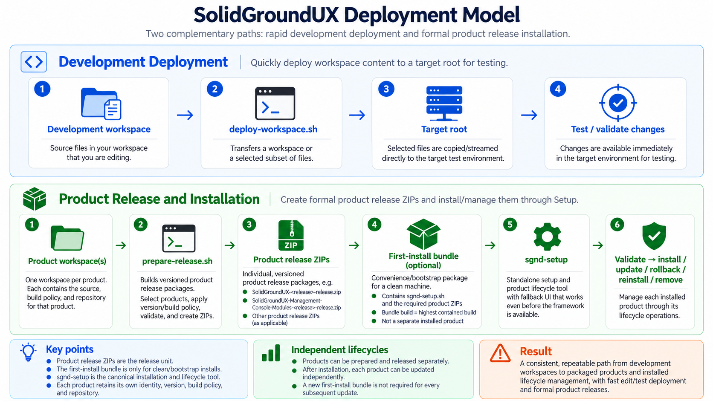

SolidGroundUX uses two deliberately different deployment paths:
The distinction matters. Development deployment optimizes the edit/test loop; Setup manages complete, identifiable releases.
`prepare-release.sh` turns a project `target-root` into a distributable product release. It resolves project identity from project definitions, validates metadata, refreshes Version/Build/checksum information as requested, verifies public wrappers, and creates the archive and integrity material required by Setup.
A product release ZIP contains, at minimum:
`release-package.info` identifies the owning product before the payload is extracted. The tar archive is complete rather than incremental; the `.removed` manifest records paths that belonged to an older release but must no longer remain installed.
Release preparation and installation are intentionally separate operations. The SDK creates packages; Setup consumes them.
Version 2.1 uses individual product ZIPs as the release unit. Framework, MCM, and SDK packages remain independently identifiable and versioned.
For a clean machine, the generated first-install bundle collects the bootstrap entry point and the product packages needed to establish the suite. Its shape is:
The bundle is a convenience/bootstrap container, not a fourth installed product.
`sgnd-setup.sh` is the canonical installation and product-lifecycle interface for current SolidGroundUX releases. It is self-sufficient enough to run before the Framework exists and to remain usable for repair when the installed Framework cannot be bootstrapped normally.
On a healthy installation Setup can reuse the normal SolidGroundUX UI primitives and active theme. When that is not possible, it uses its own small fallback UI rather than making recovery depend on the component being repaired.
After installation the public entry point is:
Common non-interactive actions include:
A specific local product ZIP can be supplied as a transient source:
Automation can combine an action with `--auto`; project selection can be made explicit with `--project <slug>`. `--dryrun` previews filesystem actions without applying them.
The executable's generated `--help` output is the authoritative option reference. This preface describes the lifecycle rather than duplicating every argument.
A clean installation begins by extracting the first-install bundle and running:
Setup can discover the adjacent product ZIPs, validate them, and install the selected products. The bootstrap copy is then replaced by the canonical installed Setup copy used for future lifecycle operations.
After a successful interactive first installation the user can continue into Setup, open the Management Console, or return to the shell. Exiting to the shell is a normal completion path; first installation does not require entering another tool.
Updates install a complete incoming release rather than applying binary deltas. The incoming manifest establishes the files that belong to the new release, while the `.removed` manifest identifies obsolete paths that must be removed from the active installation.
This model keeps the target filesystem reconcilable: an update is defined by the desired release contents, not by a chain of imperative patches from every historical version.
Setup keeps enough release history to reinstall or roll back to archived product releases. Rollback makes the installed filesystem match the selected archived release rather than merely copying older files over newer ones.
Removal is conservative. Managed files and symlinks are removed; directories are removed only when empty. Release packages can remain available for later reinstall.
Product installation state and host configuration are different concerns. Removing or replacing the SolidGroundUX software tree does not imply undoing every system setting that SolidGroundUX previously configured on the host.
New installation and lifecycle documentation should use `sgnd-setup`. Maintaining both tools as equal, parallel entry points would make the documentation and operator model needlessly ambiguous.
Setup can query the configured GitHub release source, compare the published release with local/installed state, and download the product ZIP when acquisition is needed. Acquisition changes where a package comes from; it does not change the package installation model.
Local files, downloaded files, and first-install bundle files therefore converge on the same Setup validation and installation path.
`deploy-workspace.sh` exists for development, staging, and repeatable test deployment. It can transfer a complete workspace or a filtered/incremental selection into a local or remote target root whose layout mirrors the eventual installed filesystem.
Workspace deployment is not a substitute for Setup. It does not admit a release into installed history, does not turn an arbitrary development tree into a release, and should not be used to test lifecycle behavior that depends on product packages.
A useful development sequence is:

Release artifacts carry SHA-256 sidecars so Setup can validate the package material before installation. The Setup executable is intentionally capable of operating with its fallback UI when Framework bootstrap is unavailable, which keeps the repair path independent from the health of the active runtime.
The result is a simple ownership model: